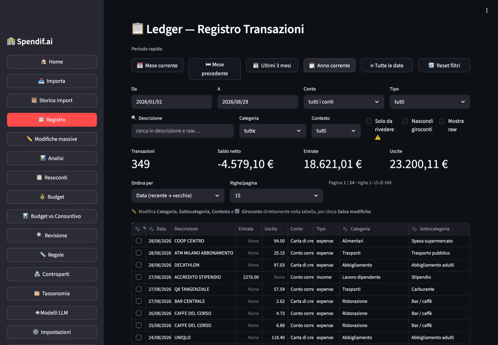
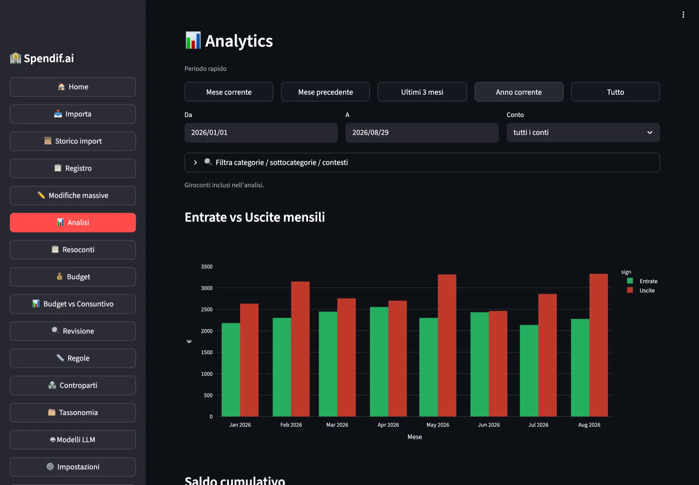

画面イメージ
モックアップではなく、実際の製品
動作中のアプリの3画面です。表示されているデータはサンプルです。



すべての銀行のファイルをインポートします。Spendifyがそれらを統合し、二重計上を排除し、 すべての取引を分類します — そしてデータがディスクから出ることは決してありません。
Python · Streamlit · SQLite · Ollama · アカウント登録不要
毎月の作業 — ダウンロード、Excelで開く、貼り付け、符号の修正、重複の探索。 そして毎回どこかが合わない。
3つの異なる銀行ポータルから取得した3つの取引ファイル、互換性のないCSVフォーマット、 異なる形式の日付、ばらばらな符号の金額。これらを手作業で統合するのは何時間もかかり、 必ずエラーが発生します。
スーパーでの買い物がクレジットカード明細と当座預金口座の両方に表示されます。 後者は月次の集計請求として計上されるためです。すべてを合計すると、支出が実際の2倍に見えてしまいます。 一般的なツールではこれを自動的に解決できません。
普通預金から定期預金への振替は支出ではありません。しかし両方の口座をインポートすると、 同じ取引が2回現れてしまいます — 当座預金からの出金として、そして定期預金への入金として。
毎月300件の取引を手作業で分類するのは大変な労力です。クラウド型のアプリはそれを行いますが、 あなたの銀行データを自社のサーバーへ送信し、月額料金を請求します。
銀行とのAPI連携なし、アカウント不要、ファイルごとの設定もありません。
銀行のポータルから取引ファイルをCSVまたはXLSX形式でエクスポートします。 どの銀行でも動作します — Spendifyは手動設定なしで自動的にフォーマットを検出します。
すべてのファイルを一度に選択できます。異なる銀行のものでも、異なる年のものでも構いません。 Spendifyはドキュメントの種類を識別し、符号を修正し、カードと口座の二重計上を排除し、 すべての取引を分類します。
統合された台帳がすべてを一箇所に表示します — グラフ、フィルタ、エクスポート。 そして、すべての金額が正確に1回だけカウントされている確かさが得られます。
動作中のアプリの3画面です。表示されているデータはサンプルです。


これは汎用の家計簿アプリではありません。複数の銀行口座を持つ人々が抱える具体的な課題を中心に設計されています。
クレジットカードが月次金額を当座預金口座から引き落とす際、 Spendifyはその関係を認識し、二重計上を自動的に取り除きます。
時間枠 ±45日間 · 3段階のマッチング処理: スライディングウィンドウ → 分割金額に対する部分和探索 → 部分照合
当座預金から定期預金への振替は、支出でも収入でもなく、内部の資金移動です。 Spendifyは金額、日付、説明欄に含まれる口座名義を比較してこれを認識します — 2つのファイルが別のタイミングでインポートされていても問題ありません。
すべての取引は、その内容から計算される一意のID(SHA-256)を持ちます。 同じファイルを2回インポートしても、何も起こりません。 重複を心配することなく、過去のすべての取引履歴を再インポートできます。
カテゴリ分類は4階層を順番に使用します:
これは単なるスローガンではありません。アーキテクチャそのものです。
SpendifyはデフォルトでOllamaをローカル実行します。インターネット接続なしで ご自身のコンピュータ上で動作するAIエンジンです。取引ファイルがディスクから外へ出ることは ありません。
OpenAIまたはClaudeを使用する場合、Spendifyはリモート呼び出しの前に 個人を特定できるすべての情報を自動的に削除します:
チェックに失敗した場合は呼び出しがブロックされます — 黙って劣化することはありません。
データはご自身のコンピュータ上のSQLiteファイルに保存されます。他のファイルと同様に コピー、移動、バックアップが可能です。必須のクラウドも、アカウントも、サブスクリプションも ありません。
代替手段では得られない価値を、Spendifyに見出す4つのプロフィール。
当座預金 + クレジットカード + 定期預金 + 証券口座をお使いですか? Spendifyはそれらすべてを1つの台帳に統合します。手作業は一切不要です。
家計の管理にExcelを使っているなら、Spendifyがその習慣に置き換わります。 ファイルを一度インポートすれば、Spendifyが統合・分類し、 あなたは例外だけを確認すればよくなります。
必須のリモートバックエンドなし、アカウントなし、登録なし。 銀行データはあるべき場所 — ご自身のコンピュータの中 — にとどまります。
モジュール化されたアーキテクチャ、構造化データに対するLLMパイプライン、 完全なテストスイートを備えたオープンソースのPythonプロジェクトです。 実験やカスタム連携を構築するための出発点として活用できます。
ローカルAI同梱のネイティブデスクトップアプリです。Dockerは不要、ターミナルを開いたままにする必要もありません。
📥 インストーラーをダウンロード (DMG · MSIX · .deb · .rpm)
スクリーンショット付きステップガイド → インストールと初回起動
— または、ターミナルから: —
スクリプトはハードウェアを検出し、お使いのRAMに最適なAIモデル(1〜7 GB)をダウンロードしてすべての設定を行います — ユーザーの作業は不要です。
アプリはLaunchpad / スタートメニュー / ファイルマネージャに表示され、すぐに使える状態になります。
開発者向け、または手動インストールをお望みですか? → 完全ガイド
必要なのはDocker Desktopのみです。GitHub Container Registryからの公式コンテナを利用し、ブラウザでhttp://localhost:8501を開きます。
🆘 サポートが必要ですか? GitHubでissueを開いてください — バグ、質問、機能リクエストを受け付けています。
⭐ Spendif.aiを気に入っていただけましたか? スターをお願いします — 公式パッケージレジストリ(Homebrew Core、winget)への到達を後押しします。
LLMフレームワーク(LangChainなど)は使用せず — AIバックエンドは公式SDKを直接利用しています。
LLMBackend(3つのメソッド)を実装し、BackendFactoryに登録してください。OpenAI互換のあらゆるAPIで動作します。
フロー2はコード変更なしでLLMによりそれらを自動的に認識します。スキーマは保存され、以降のインポートで再利用されます。
分類体系のページから、コードに触れることなく追加できます。分類体系は画面から完全に設定可能です。
process_file()パイプラインはUIから完全に分離されており — 変更なしでFastAPIにより公開できます。
winget install SpendifAi.SpendifAi特に役立つ貢献分野:
あなたの銀行が自動的に認識されない場合は、匿名化されたCSVサンプルを添えてissueを開いてください。
テストスイートはビジネスロジック層をカバーしていますが、Streamlitインターフェースはまだです。貢献の余地があります。
アーキテクチャ自体は説明文の多言語対応をすでにサポートしています。UIはイタリア語であり、他の言語を追加する余地があります。
ローカルLLMを使うとバッチ分類がボトルネックになります。並列化の余地があります。